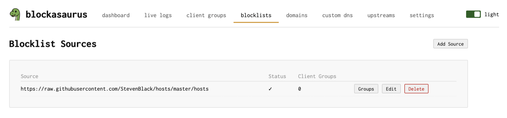
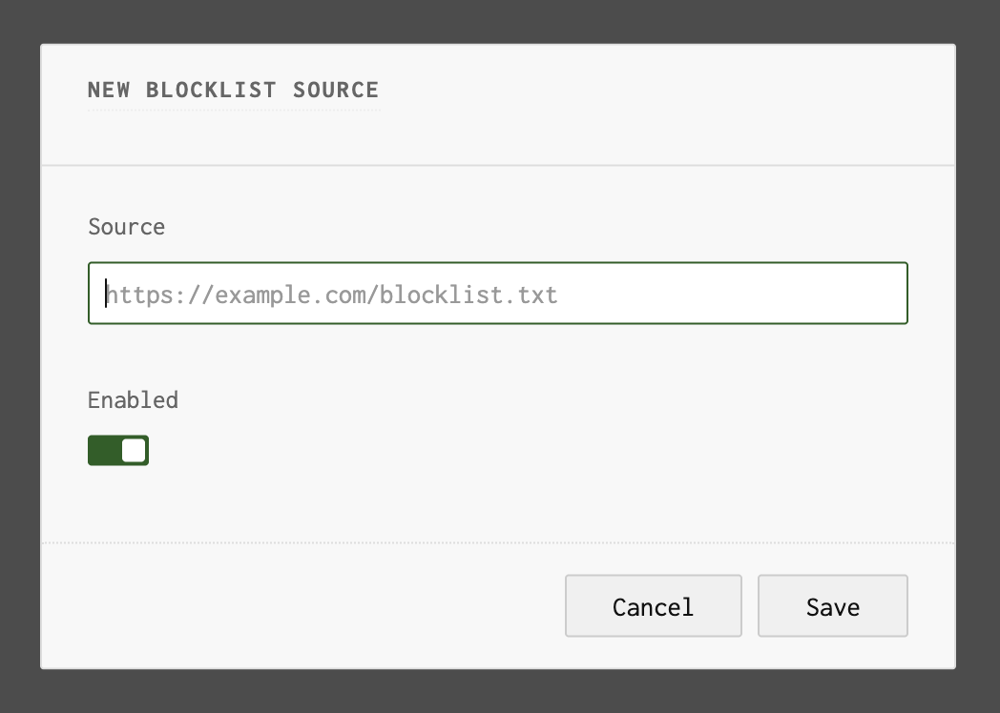
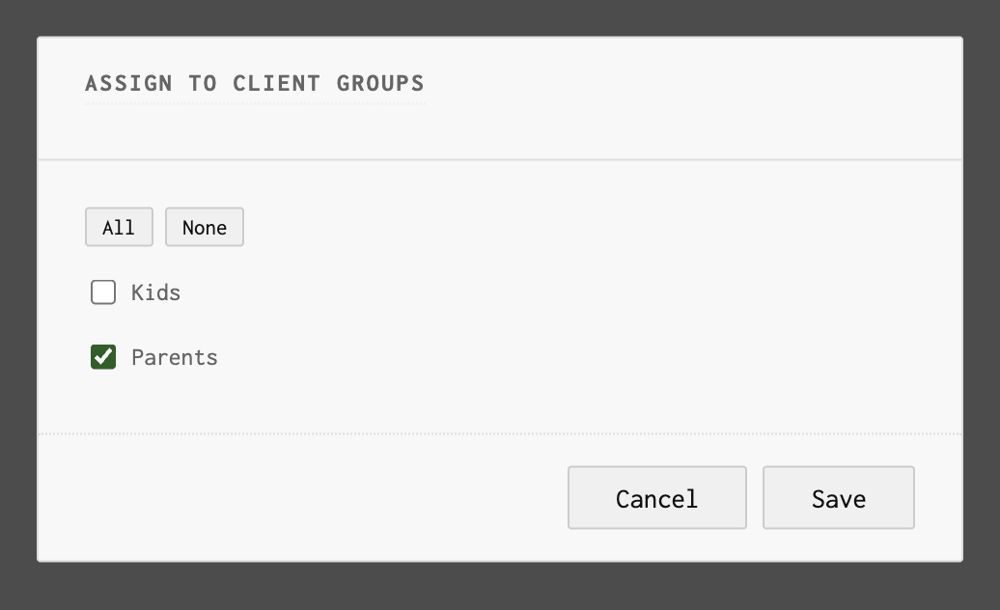

Blocklists
Subscribe to external blocklists for network-wide ad and tracker blocking
Blocklists are externally-hosted lists of domains known to serve ads, track users, or distribute malware. Blockasaurus downloads these lists periodically and blocks matching DNS queries.
The Blocklists Page
Navigate to the Blocklists tab to manage your subscribed lists.

Adding a Blocklist
- Click “Add Source” in the header.
- Enter the URL of the blocklist file. Standard hosts-file format and domain-per-line formats are supported.
- The list is enabled by default. Toggle it off if you want to add it without activating it immediately.
- Click Save. The list is downloaded on the next apply.

Blockasaurus auto-generates a group name from the
URL (used internally to track the list). For example, a list at
https://raw.githubusercontent.com/StevenBlack/hosts/master/hosts
gets the group name raw-githubusercontent-hosts-master-hosts.
Recommended Blocklists
| List | Focus | URL |
|---|---|---|
| StevenBlack Unified | Ads + malware | https://raw.githubusercontent.com/StevenBlack/hosts/master/hosts |
| OISD Big | Comprehensive | https://big.oisd.nl/domainswild |
| HaGeZi Multi Pro | Ads + tracking | https://raw.githubusercontent.com/hagezi/dns-blocklists/main/domains/pro.txt |
| 1Hosts Lite | Minimal, low FP | https://o0.pages.dev/Lite/domains.txt |
Assigning Blocklists to Client Groups
Each blocklist can be assigned to one or more client groups. This is how you give different groups different blocking policies.
- On the Blocklists page, click the “Groups” button next to a blocklist.
- A dialog shows all available client groups with checkboxes. Check the groups that should use this blocklist.
- Use the “All” or “None” buttons for quick selection.
- Click Save, then Apply in the header.

A common pattern: subscribe to a broad blocklist (like StevenBlack)
and assign it to all groups, then add stricter lists (adult content,
social media) only to the kids group.
Editing and Deleting
Each blocklist row has Edit and Delete buttons. Editing lets you change the URL or toggle the enabled status. Deleting removes the list and all its group assignments.
How Blocklist Refresh Works
Blockasaurus downloads all enabled blocklists when configuration is applied and refreshes them periodically. Domains from all lists assigned to a client group are merged into that group’s deny set.